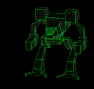

Description
Confidential. However, Dark Corner has been known by the rest of the galaxy as the hired assassins of the universe. Located at the furthest distance from the sun in Sector 1.1, the ruthless inhabitants are intelligent, cruel, and precise. Security may be tight, but we have established an uplink. | Size
Also Confidential. But it looks big, wouldn't ya say? |
Conditions
Terrible. From all peaceful contact with the inhabitants (that would be almost none), it has been gathered that the entire planet is an underground colony. Life above ground is impossile due to the huge clouds of methane and violent electrical storms. Oh yeah, and the temperature on Dark Corner is about 75 Kelvin | |
Location
Astronomical Standard 3205: Sector 1.1 |
Technology
Don't ask. |  |
Current Empires Present
Badakhshan Empire. Status: hostile |
Date Discovered
Stardate: 2907 |
|